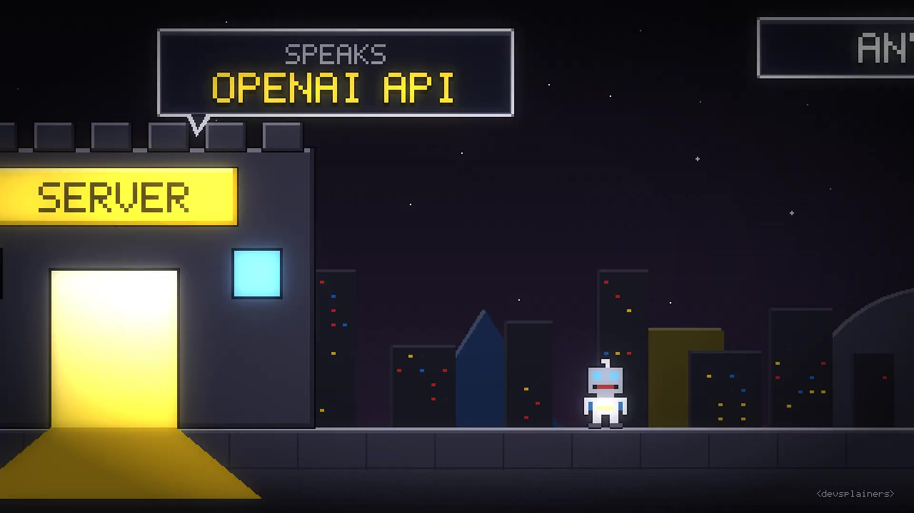
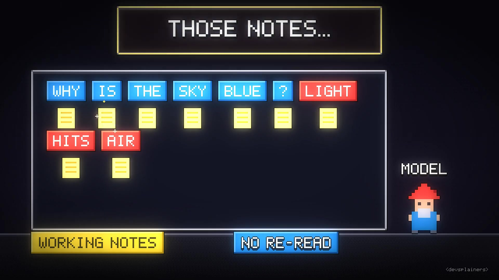
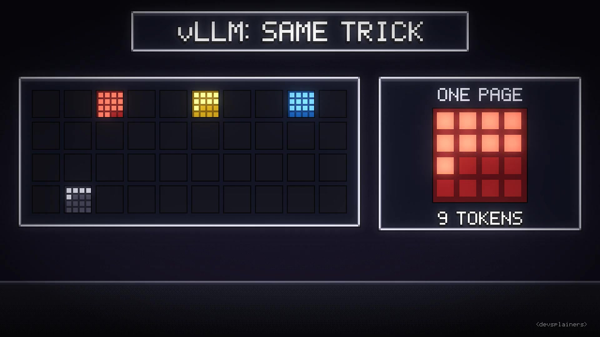
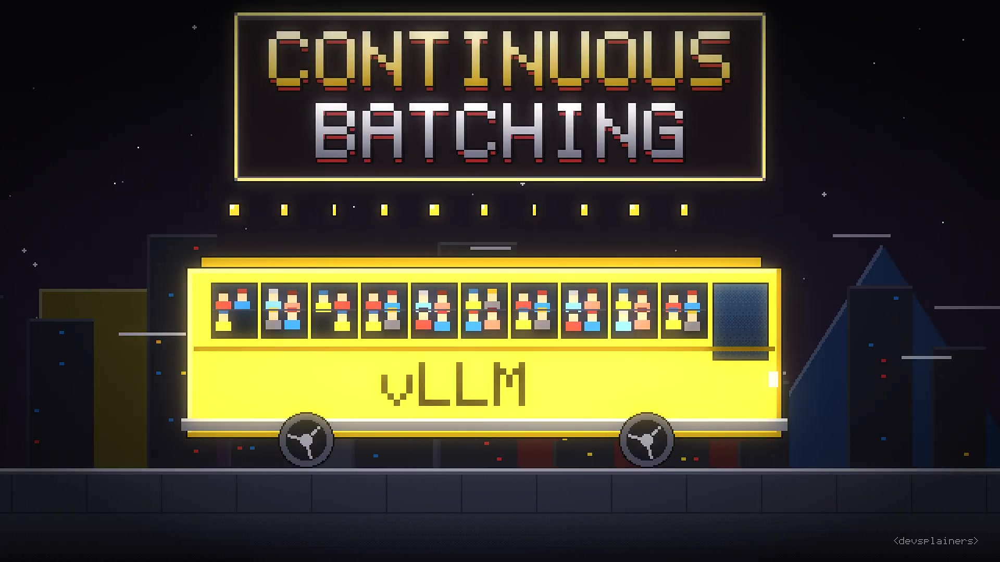
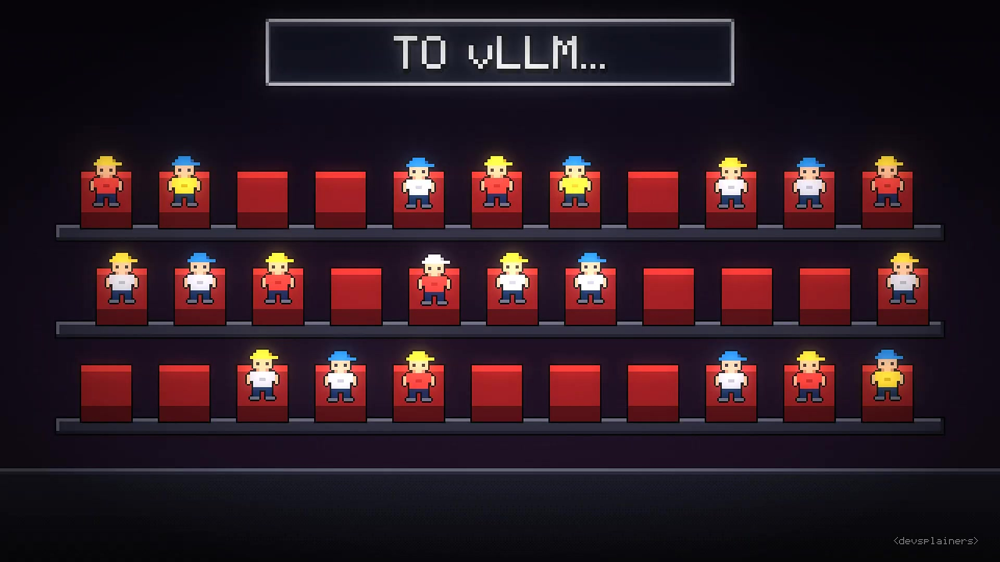
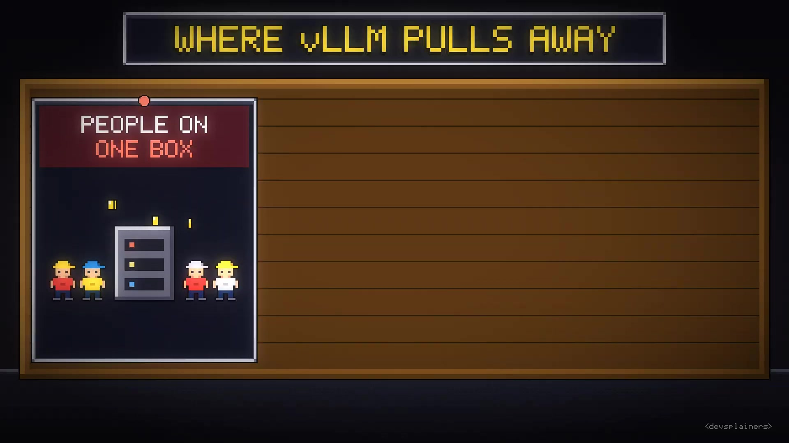

Executive summary
vLLM is a serving engine, not a desktop chat application
The video's core argument is simple and mostly right: vLLM was designed to turn a model into a shared service. It exposes an OpenAI-compatible HTTP API, manages GPU memory for many live sequences, and continuously schedules work so the accelerator is not underfilled. Ollama and llama.cpp optimize a different user experience: easy local execution, broad hardware support, GGUF models, and frequent model switching.
The engine's two most important ideas are related but distinct. PagedAttention makes KV-cache allocation more flexible, allowing more sequences to fit in memory. Continuous batching then changes the active batch after generation steps so finished requests leave and new ones enter. One improves capacity; the other turns that capacity into throughput.
- Do not benchmark only one request. Measure time to first token, inter-token latency, completed tokens per second, and request latency at realistic concurrency.
- The KV cache is the central capacity constraint. It grows with sequence length, layer count, and concurrent requests, even when the model weights are unchanged.
- High VRAM use can be intentional. vLLM reserves memory for model execution and KV-cache blocks because unused accelerator memory cannot serve another request.
- OpenAI compatibility is a useful boundary. Keeping the base URL configurable can reduce client migration work, though engine-specific features and exact behavior still require testing.
- There is no universal winner. vLLM, SGLang, TensorRT-LLM, llama.cpp, and Ollama serve overlapping but different workload, hardware, and operational needs.
The conceptual explanation and production examples come from the video. This article cross-checks the architecture against the vLLM documentation, PagedAttention paper, PyTorch Foundation announcement, and Hugging Face TGI repository. Exact defaults, platform support, and benchmark leadership change quickly; validate them against the installed vLLM release and your own traffic.
Serving boundary
One command creates a model server for many clients
Running vllm serve <model> loads a model and
starts an HTTP server. Applications can use OpenAI-compatible
endpoints by changing their base URL and model identifier. That is
the video's “Postgres versus SQLite” analogy: the server adds
scheduling, observability, capacity controls, and multi-client
behavior that are unnecessary for a simple embedded workflow.

“Compatible” should not be read as “identical.” Supported request fields, tool-calling behavior, sampling details, chat templates, multimodal inputs, and extension endpoints vary by engine and release. Treat the API as a portability layer, then run contract tests for the endpoints and model behaviors the application actually uses.
Benchmark correctly
A one-request race hides the problem vLLM was built to solve
With one prompt and one user, vLLM may tie or lose to a lighter local runtime. Server startup, scheduling, memory reservation, and process overhead do not disappear, while there is no crowd to batch. Performance changes when several users, offline jobs, or agent sub-processes request tokens concurrently.
Throughput and latency trade against each other. A larger batch can increase aggregate tokens per second while making an individual request wait longer. A useful benchmark therefore fixes model, precision, hardware, prompt/output length distribution, sampling settings, and concurrency, then reports tail latency as well as averages.
Memory pressure
The KV cache grows with every active sequence
During autoregressive generation, attention needs the keys and values created for previous tokens. Keeping them in the KV cache avoids recomputing the entire prefix for every new token. The model weights are mostly fixed after loading; the KV cache is the dynamic memory whose size expands with context and concurrency.

Earlier serving designs could reserve one contiguous region sized for a request's maximum possible sequence length. If generation ended early, much of that reservation remained unused. The PagedAttention paper reported severe fragmentation and redundant memory in the systems it compared against; the video's 20–38% utilization figure refers to that historical design context, not a universal measurement of every modern server.
PagedAttention
Allocate KV-cache blocks as the sequence grows
PagedAttention borrows the idea of virtual memory. A sequence's logical KV cache is divided into fixed-size blocks. Physical blocks can live in non-contiguous GPU memory, while a block table maps logical positions to their locations. New blocks are added as the sequence grows instead of reserving its maximum length at the beginning.

The result is lower fragmentation and greater effective batch capacity. It is important not to freeze the 2023 story in time: modern inference engines have adopted related paged KV-cache techniques. vLLM's current value is the integrated scheduler, kernels, model coverage, distributed execution, metrics, and serving interfaces around that foundation.
Scheduling
Continuous batching keeps refilling the bus
GPUs become more efficient when work from several sequences is processed together. Static batching waits for every request in a batch to finish before replacing it, which wastes slots when outputs have different lengths. Continuous batching revisits the active set during generation: completed requests leave and newly admitted requests begin without waiting for the original group.

Prefix caching
Reuses KV-cache blocks for identical prompt prefixes, such as a shared system prompt. Benefit depends on exact prefix reuse and cache residency.
Chunked prefill
Splits long prompt-prefill work into chunks so one very large prompt does not monopolize scheduling and delay decode work.
These optimizations can pull in different directions. Larger prefill chunks may improve throughput but hurt interactive latency; aggressive prefix caching consumes memory that could hold more live sequences. Tune with the application's real prompt reuse and service-level objectives, not a generic leaderboard.
Capacity planning
Reserved VRAM is a capacity pool, not automatically a leak
vLLM profiles the model and available accelerator memory during startup, then reserves a configurable fraction for execution and KV-cache blocks. The video reports a 92% default in the version it demonstrates. Because defaults can change, the current engine arguments and startup logs are the source of truth for your installation.

-
Adjust
--gpu-memory-utilizationwhen other processes need VRAM. Do not copy a percentage without checking the installed release and actual free memory. -
Set
--max-model-lento a realistic service limit. Advertising a 128K context when the product uses 8K can reserve capacity around a requirement that never occurs. - Read startup capacity information, then confirm it with a load test. The theoretical number of sequences is not a latency SLO.
- Quantization format affects compatibility, memory, kernels, and quality. The video's advice to prefer Hugging Face model formats, AWQ, or FP8 reflects vLLM's serving ecosystem; current GGUF support remains version-sensitive and should be checked in the docs.
Tool choice
Choose from workload shape, not reputation

| Question | Prefer vLLM | Prefer Ollama / llama.cpp |
|---|---|---|
| Traffic | Concurrent API clients or large offline batches | Mostly one interactive user |
| Operations | Stable server, metrics, capacity tuning, shared endpoint | Simple local installation and model switching |
| Models | Serving-oriented Hugging Face formats and quantization | GGUF library and broad local-model convenience |
| Hardware | Dedicated supported accelerator with room for a pool | Small or shared machine, CPU, or consumer desktop |
| Success metric | SLO at target concurrency and total throughput | Low setup effort and good single-session latency |
The same discipline applies to vLLM versus SGLang or TensorRT-LLM. Benchmark the actual model, prompt reuse, input and output lengths, quantization, hardware, and concurrency. SGLang may excel on workloads with repeated prompt structures; TensorRT-LLM can be attractive in an NVIDIA-specific stack. No single result remains true across all of those dimensions.
Ecosystem status
The project is mature enough to matter and fast-moving enough to verify
vLLM joined the PyTorch Foundation as a hosted project in 2025, while remaining Apache-2.0 licensed. Hugging Face's official TGI repository entered maintenance mode and points users toward vLLM, SGLang, llama.cpp, MLX, and other engines depending on deployment needs. These are strong ecosystem signals, but they do not remove the need for release-level testing.
Keep the provider base URL, model name, authentication, and supported feature set in configuration. Add a small conformance suite for streaming, tool calls, structured output, errors, and cancellation. Then changing the inference backend is an engineering decision rather than a client rewrite.
Practical playbook
A defensible way to evaluate vLLM
- Define the workload distribution: prompt length, generated length, concurrency, prefix reuse, model, and quantization.
- Define SLOs separately for time to first token, inter-token latency, end-to-end latency, and error rate.
- Start from documented engine arguments and record the exact image, vLLM, driver, CUDA/ROCm, and model revisions.
- Warm the server, increase concurrency gradually, and capture p50/p95/p99 latency, throughput, queueing, cache use, and OOMs.
- Compare alternatives under the same request traces. Include the operational cost of model loading, observability, deployment, and recovery, not only tokens per second.
- Re-run the benchmark after upgrades. Fast-moving kernels and schedulers can change the result without application changes.
Video guide
Jump to each concept
Sources and limitations
What this article is based on
- Devsplainers: What Is vLLM? Explained in 16-Bit — visual explanation, chapters, production examples, and auto-generated English captions.
- vLLM: OpenAI-Compatible Server — serving interface and supported endpoints.
- vLLM: Engine Arguments — current configuration reference for memory, context, caching, scheduling, and serving behavior.
- Efficient Memory Management for Large Language Model Serving with PagedAttention — PagedAttention design and evaluated memory/throughput claims.
- PyTorch Foundation welcomes vLLM — governance, license, adoption, and project context.
- Hugging Face Text Generation Inference — official maintenance-mode notice and recommended alternatives.
Captions are automatically generated and may contain recognition errors. Screenshots are direct 1920×1080 source frames. This summary did not reproduce the production case studies, run an inference benchmark, or verify behavior across every supported accelerator. Numbers and defaults tied to a particular release are deliberately attributed rather than presented as permanent.